我们介绍 DeepSeek-V3.2，这一模型兼具较高的计算效率和卓越的推理与 agent 表现。DeepSeek-V3.2 的关键技术突破如下：（1）DeepSeek Sparse Attention（DSA）：我们提出 DSA，这是一种高效的 attention 机制，能够大幅降低计算复杂度，同时保持模型在长上下文场景中的性能。（2）可扩展的强化学习框架：通过实施稳健的强化学习方案并扩大后训练计算规模，DeepSeek-V3.2 达到了与 GPT-5 相当的表现。值得关注的是，我们的高计算量变体 DeepSeek-V3.2-Speciale 超越了 GPT-5，表现出与 Gemini-3.0-Pro 相当的推理能力，并在 2025 年国际数学奥林匹克竞赛（IMO）和国际信息学奥林匹克竞赛（IOI）中均达到金牌水平。（3）大规模 agent 任务合成流水线：为将推理融入工具使用场景，我们开发了一种新的合成流水线，系统性地大规模生成训练数据。这种方法使 agent 后训练能够扩展，在复杂的交互环境中显著提升了泛化能力和指令遵循的稳健性。
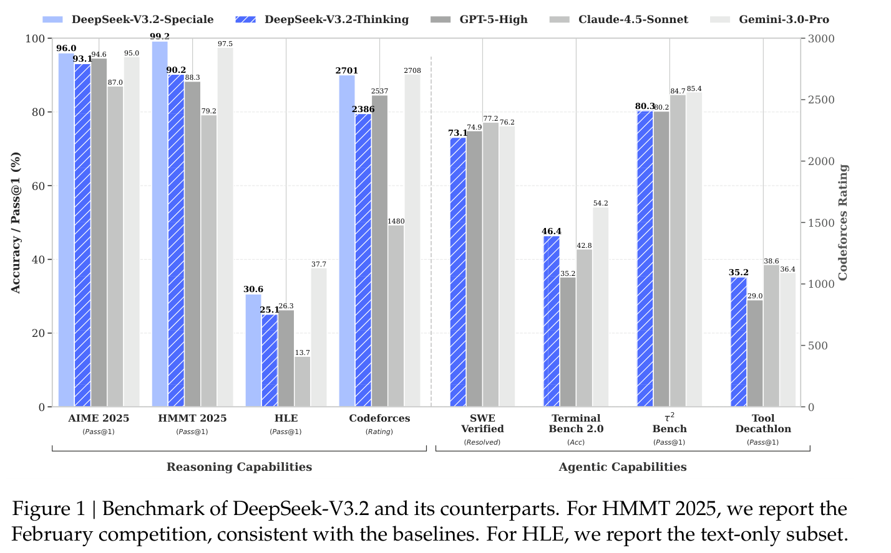
图 1｜DeepSeek-V3.2 与其他模型的基准表现。HMMT 2025 报告的是 2 月比赛结果，与基线保持一致。HLE 报告的是纯文本子集。
原文版本：arXiv:2512.02556v1 [cs.CL]，2025 年 12 月 2 日。原文链接
推理模型（DeepSeek-AI, 2025; OpenAI, 2024a）的发布标志着 LLM 发展中的一个关键时刻，推动了模型在可验证领域的整体表现大幅跃升。自这一里程碑以来，LLM 的能力迅速提升。然而，过去几个月出现了明显的分化。虽然开源社区（MiniMax, 2025; MoonShot, 2025; Qwen, 2025; ZhiPu-AI, 2025）持续取得进展，闭源专有模型（Anthropic, 2025b; DeepMind, 2025a; OpenAI, 2025）的性能提升速度却明显更快。因此，闭源与开源模型之间的性能差距似乎在扩大，而非收敛，专有系统在复杂任务中展现出越来越强的能力优势。
通过分析，我们发现了限制开源模型处理复杂任务能力的三个关键不足。首先，在架构方面，主要依赖标准 attention（Vaswani et al., 2017）机制严重限制了长序列处理效率。这种低效率对可扩展部署和有效后训练都构成了重大障碍。其次，在资源分配方面，开源模型在后训练阶段的计算投入不足，限制了其处理困难任务的表现。最后，在 AI agent 方面，开源模型的泛化能力和指令遵循能力明显落后于专有模型（EvalSys, 2025; Li et al., 2025; Luo et al., 2025），妨碍了它们在实际部署中的有效性。
为解决这些关键限制，我们首先提出 DSA，这是一种旨在大幅降低计算复杂度的高效 attention 机制。该架构有效解决了效率瓶颈，即使在长上下文场景中也能保持模型性能。其次，我们开发了稳定且可扩展的 RL 方案，使后训练阶段能够显著扩大计算规模。具体而言，该框架分配的后训练计算预算超过预训练成本的 10%，释放了更强的能力。第三，我们提出了一条新的流水线，促进工具使用场景中的可泛化推理。我们先采用 DeepSeek-V3（DeepSeek-AI, 2024）的方法实施冷启动阶段，将推理与工具使用统一到单条轨迹中。随后，我们开展大规模 agent 任务合成，生成超过 1,800 个不同环境和 85,000 个复杂提示。这些大规模合成数据推动了 RL 过程，显著增强了模型在 agent 场景中的泛化能力和指令遵循能力。
DeepSeek-V3.2 在多个推理基准上取得了与 Kimi-k2-thinking 和 GPT-5 相近的表现。此外，DeepSeek-V3.2 显著提升了开放模型的 agent 能力，在 EvalSys (2025)、Li et al. (2025) 和 Luo et al. (2025) 提出的长尾 agent 任务上展现出出色能力。DeepSeek-V3.2 成为 agent 场景中一种具有很高成本效益的选择，以明显更低的成本显著缩小了开放模型与前沿专有模型之间的性能差距。为了推进开放模型在推理领域的能力边界，我们放宽了长度限制，开发了 DeepSeek-V3.2-Speciale。由此，DeepSeek-V3.2-Speciale 达到了与领先闭源系统 Gemini-3.0-Pro（DeepMind, 2025b）相当的表现。它在 IOI 2025、ICPC World Final 2025、IMO 2025 和 CMO 2025 中均展现出金牌水平。
DeepSeek-V3.2 使用与 DeepSeek-V3.2-Exp 完全相同的架构。与 DeepSeek-V3.1 的最后一个版本 DeepSeek-V3.1-Terminus 相比，DeepSeek-V3.2 唯一的架构修改是通过继续训练引入 DeepSeek Sparse Attention（DSA）。
DSA 原型。DSA 原型主要由两个组件组成：lightning indexer 和细粒度 token 选择机制。
Lightning indexer 计算查询 token \(h_{t} \in \mathbb{R} ^{d}\) 与前序 token \(h_{s} \in \mathbb{R} ^{d}\) 之间的索引分数 \(I_{t,s}\)，以确定查询 token 应选择哪些 token：
其中，\(H^{I}\) 表示索引器头的数量；\(q^{I}_{t,j} \in \mathbb{R} ^{dᴵ}\) 和 \(w^{I}_{t,j} \in \mathbb{R}\) 由查询 token \(h_{t}\) 得到；\(k^{I}_{s} \in \mathbb{R} ^{dᴵ}\) 由前序 token \(h_{s}\) 得到。出于吞吐量方面的考虑，我们选择 ReLU 作为激活函数。由于 lightning indexer 的头数较少，而且可以用 FP8 实现，其计算效率十分突出。
给定每个查询 token \(h_{t}\) 的索引分数 \(\{I_{t,s}\}\)，我们的细粒度 token 选择机制仅检索与 top-k 索引分数对应的键值条目 \(\{c_{s}\}\)。随后，在查询 token \(h_{t}\) 与稀疏选中的键值条目 \(\{c_{s}\}\) 之间应用 attention 机制，计算 attention 输出 \(u_{t}\)：
在 MLA 下实例化 DSA。考虑到从 DeepSeek-V3.1-Terminus 继续训练，我们为 DeepSeek-V3.2 基于 MLA（DeepSeek-AI, 2024）实例化 DSA。在内核层面，为提高计算效率，每个键值条目必须由多个查询共享（Yuan et al., 2025）。因此，我们基于 MLA 的 MQA（Shazeer, 2019）模式1实现 DSA，其中每个潜向量（即 MLA 的键值条目）由查询 token 的所有查询头共享。图 2 展示了基于 MLA 的 DSA 架构。我们也提供了 DeepSeek-V3.2 的开源实现2，以明确、无歧义地说明具体细节。
我们从一个上下文长度已扩展至 128K 的 DeepSeek-V3.1-Terminus 基础 checkpoint 出发，先进行继续预训练，再进行后训练，构建 DeepSeek-V3.2。
DeepSeek-V3.2 的继续预训练包含两个训练阶段。在这两个阶段中，训练数据的分布都与 DeepSeek-V3.1-Terminus 使用的 128K 长上下文扩展数据完全一致。
1 我们在附录 A 中说明 MLA 的 MQA 与 MHA 模式之间的区别。
2 https://huggingface.co/deepseek-ai/DeepSeek-V3.2-Exp/tree/main/inference
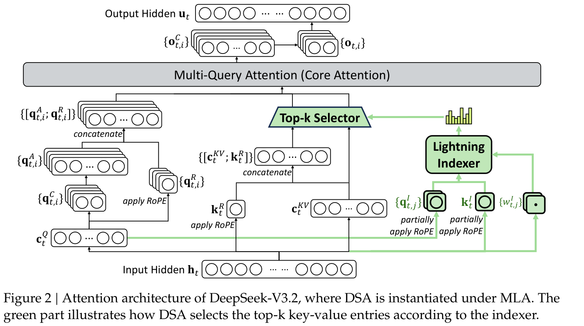
图 2｜DeepSeek-V3.2 的 attention 架构，DSA 在 MLA 下实例化。绿色部分展示了 DSA 如何根据索引器选择 top-k 键值条目。
稠密 warmup 阶段。我们首先通过一个短暂的 warmup 阶段初始化 lightning indexer。在这一阶段，我们保留稠密 attention，并冻结 lightning indexer 之外的所有模型参数。为使索引器输出与主 attention 分布对齐，对于第 \(t\) 个查询 token，我们先对所有 attention 头的主 attention 分数求和。随后沿序列维度对该和进行 L1 归一化，得到目标分布 \(p_{t,:} \in \mathbb{R} ^{t}\)。基于 \(p_{t,:}\)，我们将 KL 散度损失设为索引器的训练目标：
Warmup 阶段采用 \(10^{-3}\) 的学习率。索引器仅训练 1000 步，每步包含 16 条长度为 128K token 的序列，总计 2.1B token。
稀疏训练阶段。索引器 warmup 后，我们引入细粒度 token 选择机制，并优化所有模型参数，使模型适应 DSA 的稀疏模式。在这一阶段，我们仍将索引器输出与主 attention 分布对齐，但只考虑所选 token 集合 \(S_{t} = \{s | I_{t,s} \in \operatorname{Top-k}(I_{t,:})\}\)：
需要说明的是，我们将索引器输入从计算图中分离，以便独立优化。索引器的训练信号仅来自 \(L^{I}\)，而主模型仅依据语言建模损失进行优化。在这一稀疏训练阶段，我们采用 \(7.3 \times 10^{-6}\) 的学习率，并为每个查询 token 选择 2048 个键值 token。主模型与索引器共同训练 15000 步，每步包含 480 条长度为 128K token 的序列，总计 943.7B token。
标准基准。2025 年 9 月，我们在一组涵盖多种能力的基准上评估 DeepSeek-V3.2-Exp，并与 DeepSeek-V3.1-Terminus 比较，结果表现相近。虽然 DeepSeek-V3.2-Exp 显著提高了长序列的计算效率，但在短上下文和长上下文任务中，我们都没有观察到它相对于 DeepSeek-V3.1-Terminus 出现明显的性能退化。
人类偏好。由于直接的人类偏好评估本身容易受到偏差影响，我们采用 ChatbotArena 作为间接评估框架，近似衡量用户对新开发的基础模型的偏好。DeepSeek-V3.1-Terminus 与 DeepSeek-V3.2-Exp 使用完全相同的后训练策略，其在 2025 年 11 月 10 日评估中得到的 Elo 分数非常接近。这些结果表明，尽管引入了稀疏 attention 机制，新的基础模型仍达到了与前一版本相当的表现。
长上下文评估。DeepSeek-V3.2-Exp 发布后，多项独立长上下文评估使用此前未见过的测试集开展了测试。其中一个代表性基准是 AA-LCR3，DeepSeek-V3.2-Exp 在推理模式下的分数比 DeepSeek-V3.1-Terminus 高 4 分。在 Fiction.liveBench 评估4中，DeepSeek-V3.2-Exp 在多个指标上都持续优于 DeepSeek-V3.1-Terminus。这些证据表明，DeepSeek-V3.2-Exp 的基础 checkpoint 在长上下文任务上没有退步。
DSA 将主模型的核心 attention 复杂度从 \(O(L^2)\) 降低至 \(O(Lk)\)，其中 \(k\,(\ll L)\)为所选 token 的数量。虽然 lightning indexer 的复杂度仍为 \(O(L^2)\)，但其计算量远小于 DeepSeek-V3.1-Terminus 中的 MLA。结合我们的优化实现，DSA 在长上下文场景中实现了显著的端到端加速。图 3 展示了 DeepSeek-V3.1-Terminus 与 DeepSeek-V3.2 的 token 成本如何随序列中的 token 位置变化。这些成本通过对部署在 H800 GPU 上的实际服务进行基准测试来估计，按每 GPU 每小时 2 美元的租赁价格计算。对于短序列 prefill，我们专门实现了带掩码的 MHA 模式来模拟 DSA，以在短上下文条件下获得更高效率。
继续预训练结束后，我们进行后训练，得到最终的 DeepSeek-V3.2。DeepSeek-V3.2 的后训练也采用稀疏 attention，其方式与稀疏继续预训练阶段相同。对于 DeepSeek-V3.2，我们沿用 DeepSeek-V3.2-Exp 的后训练流水线，包括专用模型蒸馏和混合 RL 训练。
专用模型蒸馏。对于每项任务，我们先开发一个仅专注于该领域的专用模型，所有专用模型都从同一个预训练的 DeepSeek-V3.2 基础 checkpoint 进行微调。（本句跨页，接下页。）
3 https://artificialanalysis.ai/evaluations/artificial-analysis-long-context-reasoning
4 https://fiction.live/stories/Fiction-liveBench-April-6-2025/oQdzQvKHw8JyXbN87
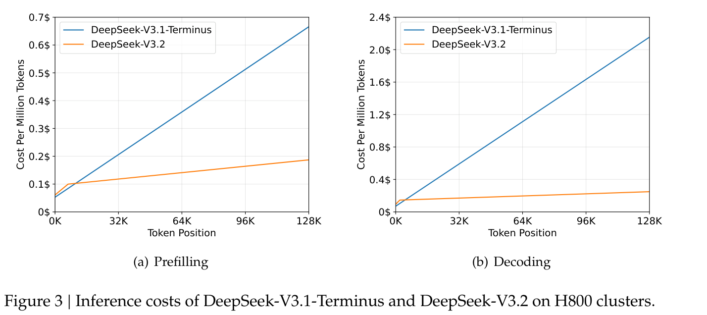
图 3｜DeepSeek-V3.1-Terminus 与 DeepSeek-V3.2 在 H800 集群上的推理成本。
（上页末句已完整翻译，以下继续专用模型蒸馏。）
除写作任务和通用问答外，我们的框架还涵盖六个专门领域：数学、编程、通用逻辑推理、通用 agent 任务、agent 编程和 agent 搜索，所有领域都支持思考和非思考模式。每个专用模型都使用大规模强化学习（RL）计算进行训练。此外，我们使用不同模型生成长 CoT 推理（思考模式）和直接回答生成（非思考模式）的训练数据。专用模型准备就绪后，它们用于为最终 checkpoint 生成各领域的数据。实验结果表明，在蒸馏数据上训练的模型，其表现仅略低于领域专用模型；通过后续 RL 训练，这一性能差距可以有效消除。
混合 RL 训练。对于 DeepSeek-V3.2，我们仍采用 GRPO（DeepSeek-AI, 2025; Shao et al., 2024）作为 RL 训练算法。与 DeepSeek-V3.2-Exp 一样，我们将推理、agent 和人类对齐训练合并到一个 RL 阶段。这种方法有效平衡了不同领域的表现，同时避开了多阶段训练范式常见的灾难性遗忘问题。对于推理和 agent 任务，我们采用基于规则的结果奖励、长度惩罚和语言一致性奖励。对于通用任务，我们使用 GenRM，每个提示都有自己的评估细则。
DeepSeek-V3.2 与 DeepSeek-V3.2-Speciale。DeepSeek-V3.2 整合了从专用模型蒸馏得到的推理、agent 和人类对齐数据，经过数千步继续 RL 训练，得到最终 checkpoint。为探索延长思考的潜力，我们还开发了实验性变体 DeepSeek-V3.2-Speciale。该模型仅在推理数据上训练，并在 RL 中降低长度惩罚。此外，我们引入了 DeepSeekMath-V2（Shao et al., 2025）的数据集和奖励方法，以增强数学证明能力。
我们将在第 3.1 节重点介绍如何制定稳定的训练方案来扩大 RL 计算规模，并在第 3.2 节介绍如何将思考融入 agent 任务。
我们先回顾 GRPO 的目标。对于每个问题 \(q\)，GRPO 从旧策略 \(\pi _{old}\) 采样一组回答 \(\{o_{1}, \cdot \cdot \cdot , o_{G}\}\)，通过最大化以下目标来优化策略模型 \(\pi _{\theta}\)：
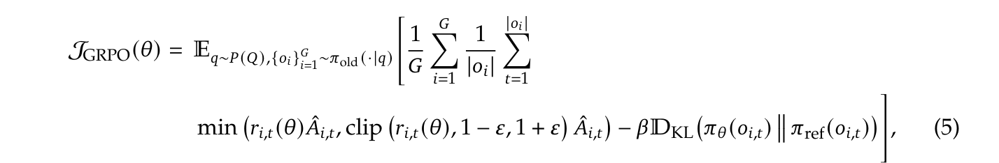
其中，
是当前策略与旧策略之间的重要性采样比率。\(\epsilon\) 和 \(\beta\) 是分别控制裁剪范围和 KL 惩罚强度的超参数。\(\hat{A}_{i,t}\) 是 \(o_{i,t}\) 的优势，通过在每组内对结果奖励进行归一化来估计。具体而言，使用一组 RM 为组内的每个输出 \(o_{i}\) 评定结果奖励 \(R_{i}\)，分别得到 \(G\) 个奖励 \(R = \{R_{1}, \cdot \cdot \cdot , R_{G}\}\)。\(o_{i,t}\) 的优势通过从输出 \(o_{i}\) 的奖励中减去组平均奖励计算，即 \(\hat{A}_{i,t} = R_{i} - \operatorname{mean}(R)\)。
下面，我们概述直接基于 GRPO 算法、用于稳定 RL 扩展的额外策略。
无偏 KL 估计。由于 \(o_{i,t}\) 采样自旧策略 \(\pi _{old}(\cdot | q, o_{i,<t})\)，我们利用当前策略 \(\pi _{\theta}\) 与旧策略 \(\pi _{old}\) 之间的重要性采样比率，修正 K3 估计器（Schulman, 2020），得到无偏的 KL 估计：
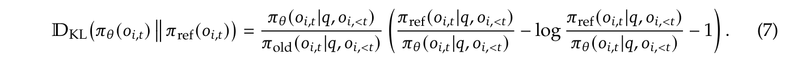
这一调整直接使该 KL 估计器的 gradient 变得无偏，消除了系统性估计误差，从而促进稳定收敛。这与原始 K3 估计器形成鲜明对比，尤其是当采样 token 在当前策略下的概率远低于参考策略，即 \(\pi _{\theta} \ll \pi _{ref}\) 时。在这种情况下，K3 估计器的 gradient 会赋予不成比例的大幅、无界权重，以最大化这些 token 的似然，导致噪声 gradient 更新；这些更新累积后会降低后续迭代的样本质量，并导致训练动态不稳定。实践中，我们发现不同领域受益于不同强度的 KL 正则化。对于数学等某些领域，采用较弱的 KL 惩罚，甚至完全省略它，可以获得更好的表现。
Off-policy 序列掩码。为提高 RL 系统效率，我们通常生成一大批 rollout 数据，随后将其分为多个 mini-batch，执行若干步 gradient 更新。这种做法天然会引入 off-policy 行为。此外，用于高效生成数据的推理框架通常经过高度优化，其实现细节可能与训练框架不同。这种训练与推理的不一致性（接下页）
（接上页）进一步加剧了 off-policy 程度。
为稳定训练并提高对 off-policy 更新的容忍度，我们将引入显著策略偏离的负向序列屏蔽；偏离程度由数据采样策略 \(\pi _{old}\) 与当前策略 \(\pi _{\theta}\) 之间的 KL 散度衡量。具体而言，我们在 GRPO 损失中引入二值掩码 \(M\)：
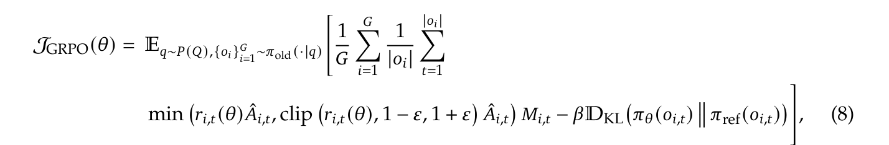
其中，
\(\delta\) 是控制策略偏离阈值的超参数。这里的 \(\pi _{old}\) 表示推理框架直接返回的采样概率，因此旧策略与当前策略之间的 KL 散度涵盖了上述两种 off-policy 来源。还需要说明的是，我们仅屏蔽优势为负的序列。
直观来看，模型从自身错误中学习时获益最大，而高度 off-policy 的负样本可能有害，可能误导优化过程或使其不稳定。我们在实验中观察到，这种 off-policy 序列掩码操作改善了某些原本会出现不稳定现象的训练场景的稳定性。
保持路由（Keep Routing）。MoE 模型通过在推理时仅激活一部分专家模块，提高计算效率。然而，推理与训练框架之间的差异，加上策略更新，即使对于相同输入，也可能造成推理和训练期间的专家路由不一致。这种不一致会导致活跃参数子空间发生突变，使优化不稳定，并加剧 off-policy 问题。为缓解这一问题，我们保留推理框架采样时使用的专家路由路径，并在训练期间强制使用相同路径，确保优化的是相同的专家参数。我们发现，这种保持路由操作对 MoE 模型的 RL 训练稳定性至关重要；从 DeepSeek-V3-0324 起，我们的 RL 训练流水线就已采用这一操作。
保持采样掩码（Keep Sampling Mask）。Top-p 和 top-k 采样是广泛使用的采样策略，用于提升 LLM 生成回答的质量。在 RL 训练中采用这些策略也有益，因为它们避免采样概率极低的 token 作为优化目标。虽然这种截断保持了样本质量，但它会使 \(\pi _{old}\) 与 \(\pi _{\theta}\) 的动作空间不匹配，违反重要性采样原则，导致训练不稳定。为解决这一问题，我们在从 \(\pi _{old}\) 采样时保留截断掩码，并在训练期间将其应用于 \(\pi _{\theta}\)，确保两种策略共享相同的动作子空间。实验中，我们发现，将 top-p 采样与保持采样掩码策略结合，能够有效保持 RL 训练期间的语言一致性。
DeepSeek-R1 已经表明，引入思考过程能够显著增强模型解决复杂问题的能力。基于这一认识，我们希望将思考能力融入工具调用场景。
我们观察到，照搬 DeepSeek-R1 的策略——在第二轮消息到来时丢弃推理内容——会使 token 使用效率明显降低。这种方法迫使模型在每次后续工具调用时，都重复对整个问题重新推理。为缓解这一问题，我们开发了专门针对工具调用场景的上下文管理方式，如图 4 所示：
需要注意的是，Roo Code 或 Terminus 等某些 agent 框架通过用户消息模拟工具交互。由于上述上下文管理规则，这些框架可能无法充分受益于我们增强的推理保留机制。因此，我们建议在这类架构下使用非思考模型，以获得最佳表现。
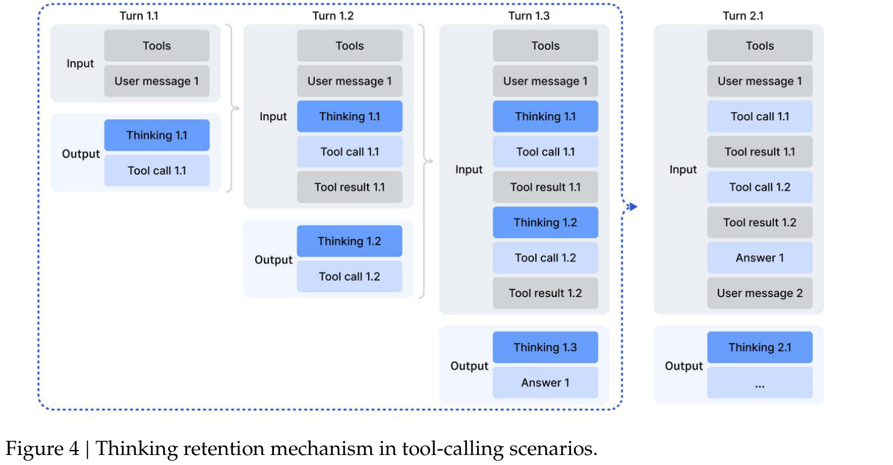
图 4｜工具调用场景中的思考保留机制。
在已有推理数据（非 agent 数据）和非推理 agent 数据的情况下，通过精心设计的提示整合这两种能力，是一种直接的策略。我们认为，模型有足够的能力准确遵循明确的指令，从而能够将工具执行自然地融入推理过程。
为展示冷启动机制的工作方式，我们选取了一些训练数据样例，如附录表 6–8 所示。需要注意，不同的任务提示对应不同的系统提示。表 6–8 展示了一个与竞赛编程提示对应的示例。表 6 给出了我们的推理数据样例，使用系统提示明确要求模型在给出最终答案之前进行推理，并使用特殊标签 <think></think> 标记推理路径。表 7 展示了非推理 agent 数据的提示，其系统提示包含工具调用指导。表 8 展示了我们设计的系统提示，用于指导模型在推理过程中融入多次工具调用。
通过这种方式，虽然工具使用模式中的推理可能还不够稳健，模型仍偶尔能够生成所需轨迹，从而为后续强化学习阶段奠定基础。
多样化的 RL 任务对于增强模型稳健性至关重要。对于搜索、代码工程和代码解释等任务，我们采用真实世界的工具，包括实际的网页搜索 API、编程工具和 Jupyter Notebook。虽然这些 RL 环境是真实的，但所用提示来自互联网内容提取或合成生成，而非实际用户交互。对于其他任务，环境和提示都通过合成构建。表 1 描述了我们使用的 agent 任务。
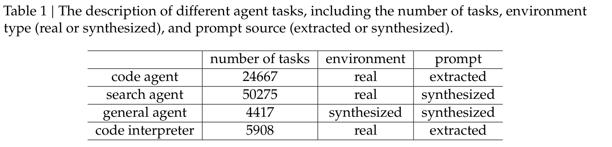
表 1｜不同 agent 任务的说明，包括任务数量、环境类型（真实或合成）以及提示来源（提取或合成）。
搜索 agent。我们采用基于 DeepSeek-V3.2 的多 agent 流水线，生成多样化、高质量的训练数据。首先，我们从大规模网页语料中采样不同领域内信息丰富的长尾实体。然后，问题构建 agent 使用搜索工具探索每个实体，搜索深度和广度参数可配置，并将发现的信息整合为问答对。多个采用不同配置（不同 checkpoint、系统提示等）的答案生成 agent，为每个提出的问答对生成多样化候选回答。具备搜索能力的验证 agent 通过多轮验证检查所有答案，只保留标准答案正确、且所有候选答案均可验证为错误的样本。这些数据涵盖多种语言、领域和难度等级。为补充这些可验证样本，并更好地反映实际使用情况，我们还从已有的有用性 RL 数据集中筛选样例以扩充数据集，搜索工具能对这些样例带来可衡量的收益。随后，我们制定涵盖多个质量维度的详细评估细则，并使用 GenRM 依据这些细则为回答评分。这种混合方法能够同时优化事实可靠性和实际有用性。
代码 agent。我们从 GitHub 挖掘数百万个 issue–Pull Request（PR）对，构建用于解决软件问题的大规模可执行环境。该数据集通过启发式规则和基于 LLM 的判断进行严格筛选，以确保高质量，要求每条数据都包含合理的问题描述、相关的标准修复补丁，以及用于验证的测试补丁。我们使用由 DeepSeek-V3.2 驱动的自动环境搭建 agent，为这些问题与 PR 对构建可执行环境。该 agent 负责软件包安装、依赖解析和测试执行。测试结果以标准 JUnit 格式输出，确保在不同编程语言和测试框架之间采用一致的解析方式。只有当应用标准修复补丁后，从失败变为通过（F2P）的测试用例数量非零（表示问题已修复），且从通过变为失败（P2F）的测试用例数量为零（表示没有回归）时，环境才被视为成功构建。通过这条流水线，我们成功构建了数万个可复现的问题解决环境，涵盖 Python、Java、JavaScript、TypeScript、C、C++、Go 和 PHP 等多种编程语言。
代码解释器 agent。我们使用 Jupyter Notebook 作为代码解释器，处理复杂推理任务。为此，我们整理了涵盖数学、逻辑和数据科学的多样化问题，每个问题都要求模型利用代码执行能力得出解决方案。
通用 agent。为扩大 RL 中 agent 环境和任务的规模，我们采用自动环境合成 agent，合成了 1,827 个面向任务的环境。这些任务难以解决，但易于验证。合成工作流主要包括环境与工具集构建、任务合成，以及解答生成。具体流程如下。
按照这一工作流，我们得到数千个 <环境、工具、任务、验证器> 元组。随后，我们使用 DeepSeek-V3.2 在该数据集上进行 RL，只保留 pass@100 非零的实例，最终得到 1,827 个环境及其对应任务（共 4,417 个）。下面展示一个合成旅行规划示例。这个示例说明，虽然在庞大的组合空间中搜索满足所有约束的旅行计划具有挑战性，但检查给定候选方案是否满足这些约束相对简单。
我计划从杭州出发进行一次三天旅行，需要你帮我制定 2025 年 10 月 1 日至 10 月 3 日的行程。有几个重要要求：整个旅行期间，我不希望重复任何城市、酒店、景点或餐厅。另外，请确保你推荐的每家酒店、餐厅和每个景点确实位于我当天入住的城市。关于第二天还有一个要求——我希望合理安排预算。如果最终预订的是每晚价格为 800 CNY 或以上的豪华酒店，那么其他支出就需要更加谨慎：两家餐厅（午餐和晚餐）的总消费应低于 350 CNY，两家餐厅的评分均应至少为 4.0 星，且下午景点的门票价格需低于 120 CNY。如果第二天的酒店属于中高价位（500–800 CNY），我的预算就会稍微灵活一些——只需确保至少一家所选餐厅的评分达到 4.0 或以上，景点门票价格应低于 180 CNY。如果是更实惠的酒店（200–500 CNY），则只需确保至少一家餐厅的评分达到 3.2 或以上。你能帮我制定这个行程吗？
[
{ "time": "2025-10-01", "city": "cite_name", "hotel": "hotel_name", "afternoon_restaurant": "restaurant_name", "afternoon_attraction": "attraction_name", "evening_restaurant": "restaurant_name" },
{ "time": "2025-10-02", "city": "cite_name", "hotel": "hotel_name", "afternoon_restaurant": "restaurant_name", "afternoon_attraction": "attraction_name", "evening_restaurant": "restaurant_name" },
{ "time": "2025-10-03", "city": "cite_name", "hotel": "hotel_name", "afternoon_restaurant": "restaurant_name", "afternoon_attraction": "attraction_name", "evening_restaurant": "restaurant_name" }
]
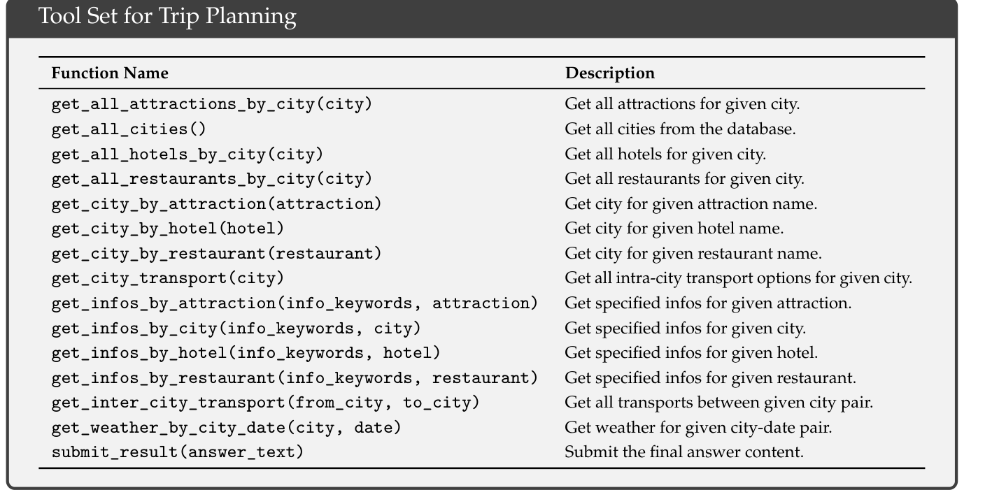
旅行规划工具集（函数名与描述按原样保留）。
我们在 MMLU-Pro（Wang et al., 2024）、GPQA Diamond（Rein et al., 2023）、Human Last Exam（HLE）纯文本版（Phan et al., 2025）、LiveCodeBench（2024.08–2025.04）、Codeforces（评测列表接下页）
（接上页的评测列表）
以及 Aider-Polyglot、AIME 2025、HMMT Feb 2025、HMMT Nov 2025（Balunović et al., 2025）、IMOAnswerBench（Luong et al., 2025）、Terminal Bench 2.0、SWE-Verified（OpenAI, 2024b）、SWE Multilingual（Yang et al., 2025）、BrowseComp（Wei et al., 2025）、BrowseCompZh（Zhou et al., 2025）、\(\tau 2\)-bench（Barres et al., 2025）、MCP-Universe（Luo et al., 2025）、MCP-Mark（EvalSys, 2025）和 Tool-Decathlon（Li et al., 2025）上评估模型。工具使用基准采用标准函数调用格式进行评估，模型配置为思考模式。对于 MCP-Universe（Luo et al., 2025）和 MCP-Mark（EvalSys, 2025），我们使用内部环境评估所有模型，因为搜索和 Playwright 环境可能与官方设置略有不同。我们将温度设为 1.0，上下文窗口设为 128K token。
对于 AIME、HMMT、IMOAnswerBench 和 HLE 等数学相关任务，我们使用以下模板评估：
{question}\nPlease reason step by step, and put your final answer within \boxed{}.
即：“{question}，请逐步推理，并将最终答案放在 \boxed{} 中。”对于 HLE，我们还使用官方模板评估了 DeepSeek-V3.2-Thinking，得到 23.9 分。
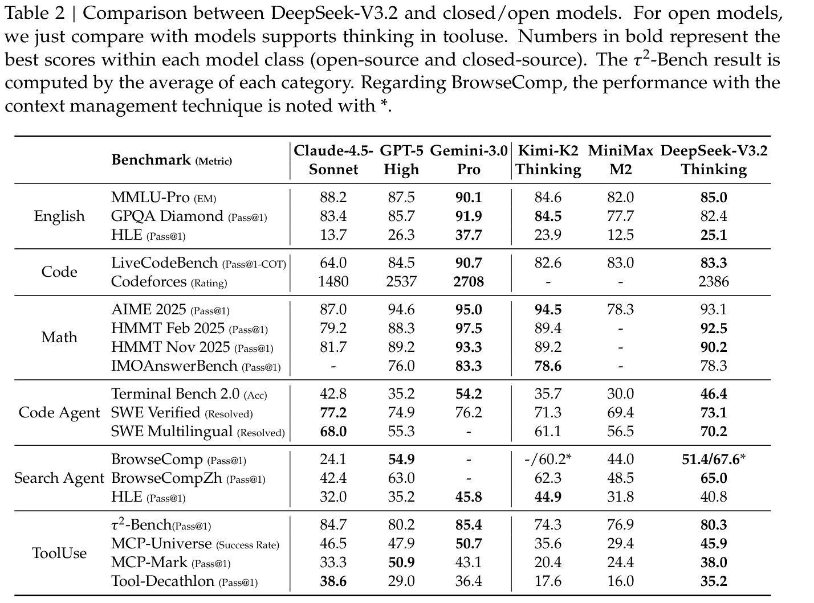
表 2｜DeepSeek-V3.2 与闭源／开放模型的比较。对于开放模型，仅比较支持在工具使用中思考的模型。粗体数字表示各模型类别（开源和闭源）内的最佳分数。\(\tau 2\)-Bench 结果按各类别的平均值计算。对于 BrowseComp，使用上下文管理技术的表现以 * 标注。
DeepSeek-V3.2 在推理任务上取得了与 GPT-5-high 相近的表现，但略逊于 Gemini-3.0-Pro。与 K2-Thinking 相比，DeepSeek-V3.2 在输出 token 显著更少的情况下取得了相当的分数，如表 3 所示。这些性能提升可以归因于为 RL 训练分配的更多计算资源。近几个月，我们观察到性能持续提升与 RL 训练预算的扩大相关，该预算已经超过预训练成本的 10%。我们推测，分配更多计算预算可能进一步增强推理能力。这里报告的 DeepSeek-V3.2 表现受到长度约束 RM 的限制；移除该限制后，我们观察到模型性能进一步提升，详见第 4.2 节。（本句跨页，已在本页完整翻译。）
（上页末句已完整翻译，以下继续主要结果。）
在代码 agent 评估中，DeepSeek-V3.2 在 SWE-bench Verified 和 Terminal Bench 2.0 上均显著优于开源 LLM，展示了它在实际编程工作流中的潜力。关于 Terminal Bench 2.0，如前所述，我们针对“思考模式”的上下文管理策略目前与 Terminus 不兼容，因此报告的 46.4 分是使用 Claude Code 框架取得的。我们还使用 Terminus 在非思考模式下评估了 DeepSeek-V3.2，得到 39.3 分。对于 SWE-bench Verified，主要分数使用内部框架取得。在其他设置下开展的稳健性测试，包括 Claude Code 和 RooCode 框架以及非思考模式，产生了一致的结果，分数范围为 72 至 74。
对于搜索 agent 评估，我们使用标准商业搜索 API 测试模型。由于 DeepSeek-V3.2 仅支持最大 128K 的上下文长度，约 20% 以上的测试用例会超出这一限制。为解决此问题，我们采用上下文管理方法得到最终分数。作为参考，不使用上下文管理时，分数为 51.4。更多细节见第 4.4 节。
在工具使用基准上，DeepSeek-V3.2 大幅缩小了开源与闭源 LLM 之间的性能差距，但仍低于前沿模型。对于 \(\tau 2\)-bench，我们使用模型自身作为用户 agent，最终各类别分数为 63.8（航空）、81.1（零售）和 96.2（电信）。对于 MCP 基准，我们采用函数调用格式，并将工具输出放入指定为“tool”角色的消息中，而非“user”角色消息。在测试期间，我们观察到 DeepSeek-V3.2 经常进行冗余的自我验证，生成过长的轨迹。这种倾向常常导致上下文长度超过 128K 限制，尤其是在 MCP-Mark GitHub 和 Playwright 评估等任务中。因此，这一现象妨碍了 DeepSeek-V3.2 的最终表现。不过，整合上下文管理策略可以进一步提升性能。我们将其视为未来工作的一个方向，也是用户在实际使用中需要考虑的问题。即使 DeepSeek-V3.2 存在这一问题，它仍显著优于已有开放模型。由于这些基准使用的环境与工具集并未在 RL 训练中出现过，观察到的提升展示了 DeepSeek-V3.2 将推理策略泛化至域外 agent 场景的能力。非思考模型在 agent 场景中的评估见附录表 9。
表 3 表明，DeepSeek-V3.2-Speciale 通过使用更多推理 token 实现了更优的表现，在多个基准上超越最先进的 Gemini-3.0-Pro。如表 4 所示，这一通用模型在没有针对性训练的情况下，在 2025 年国际信息学奥林匹克竞赛（IOI）和 ICPC 世界总决赛（ICPC WF）中达到了金牌水平。此外，通过引入 Shao et al. (2025) 的技术，该模型在复杂证明任务中表现出色，在 2025 年国际数学奥林匹克竞赛（IMO）和中国数学奥林匹克竞赛（CMO）5中达到金牌门槛。详细评估方案见附录 D。
然而，DeepSeek-V3.2-Speciale 的 token 效率仍显著低于 Gemini-3.0-Pro。为降低部署成本和延迟，我们在正式版 DeepSeek-V3.2 的训练期间施加了更严格的 token 约束，旨在优化（接下页）
5 我们评估的是 CMO 2025 的英文版本。IMO 2025 和 CMO 2025 的题目以及推理代码可在以下地址找到：https://github.com/deepseek-ai/DeepSeek-Math-V2。
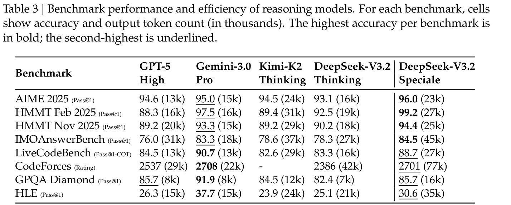
表 3｜推理模型的基准表现与效率。每个基准的单元格展示准确率与输出 token 数量（单位：千）。每个基准的最高准确率以粗体标示，第二高的准确率以下划线标示。
（接上页）性能与成本之间的权衡。我们认为，token 效率仍是未来研究的关键领域。
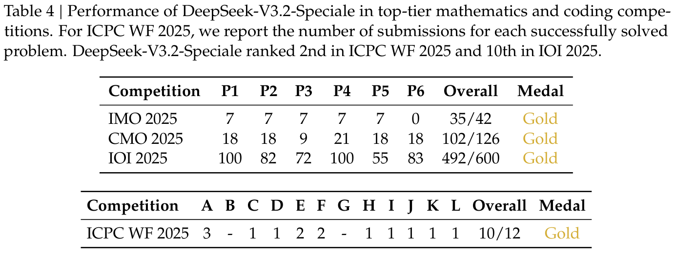
表 4｜DeepSeek-V3.2-Speciale 在顶级数学和编程竞赛中的表现。对于 ICPC WF 2025，我们报告每道成功解答题目的提交次数。DeepSeek-V3.2-Speciale 在 ICPC WF 2025 中排名第 2，在 IOI 2025 中排名第 10。
本节通过消融实验研究合成 agent 任务的作用。我们关注两个问题：第一，合成任务是否对强化学习而言具有足够的挑战性？第二，这些合成任务的泛化效果如何，即它们能否迁移到不同的下游任务或真实世界环境？
为回答第一个问题，我们从通用合成 agent 任务中随机抽取 50 个实例，评估用于合成的模型以及前沿闭源 LLM。如表 5 所示，DeepSeek-V3.2-Exp 的准确率仅为 12%，而前沿闭源模型最高达到 62%。这些结果表明，合成数据包含对 DeepSeek-V3.2-Exp 和前沿闭源模型都具有挑战性的 agent 任务。
为研究在合成数据上进行 RL 能否泛化至不同任务或真实世界环境，我们对 DeepSeek-V3.2 的 SFT checkpoint（记为 DeepSeek-V3.2-SFT）进行 RL。为排除长 CoT 和其他 RL 数据的影响，我们仅在非思考模式下对合成 agent 任务进行 RL。随后，我们将该模型与 DeepSeek-V3.2-SFT 和 DeepSeek-V3.2-Exp 比较，其中 DeepSeek-V3.2-Exp 仅在搜索和代码环境中进行 RL 训练。如图 5 所示，在合成数据上开展大规模 RL，会相较于 DeepSeek-V3.2-SFT 带来显著提升（接下页）
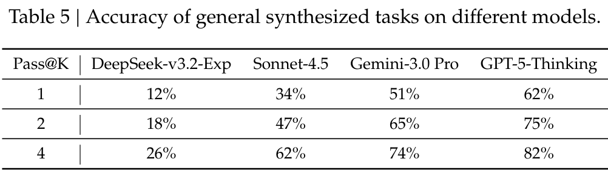
表 5｜不同模型在通用合成任务上的准确率。
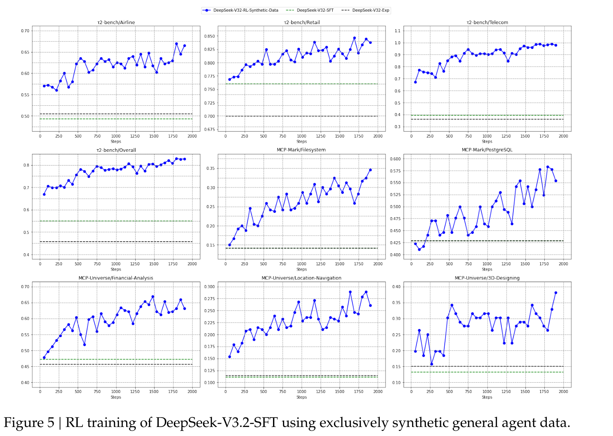
图 5｜仅使用合成通用 agent 数据对 DeepSeek-V3.2-SFT 进行 RL 训练。
（接上页）这些提升出现在 Tau2Bench、MCP-Mark 和 MCP-Universe 基准上。相反，将 RL 限制在代码和搜索场景中，并不会改善这些基准上的表现，这进一步凸显了合成数据的潜力。
即使使用 128k 这样扩展后的上下文窗口，agent 工作流，尤其是基于搜索的场景，也经常遇到最大长度限制，导致推理过程过早截断。这一瓶颈阻碍了测试时计算潜力的充分发挥。为解决此问题，我们引入采用简单策略的上下文管理：当 token 使用量超过上下文窗口长度的 80% 时，扩展测试时的 token 预算。这些策略包括：（1）Summary，对溢出的轨迹进行总结，然后重新启动 rollout；（2）Discard-75%，丢弃轨迹中前 75% 的工具调用历史，释放空间；（3）Discard-all，丢弃所有此前的工具调用历史，重置上下文（类似于新的 context 工具（Anthropic, 2025a））。作为比较，我们还实现了并行扩展基线 Parallel-fewest-step，它采样 N 条独立轨迹，并（接下页）
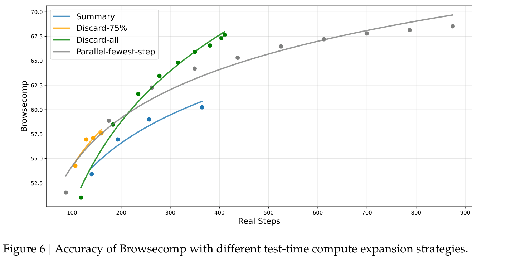
图 6｜不同测试时计算扩展策略下的 Browsecomp 准确率。
（接上页）选择步骤最少的轨迹。
我们在 BrowseComp 基准（Wei et al., 2025）上评估这些策略。如图 6 所示，在不同计算预算下，上下文管理通过允许模型扩大测试时计算、为执行更多步骤提供空间，带来了显著性能提升。例如，Summary 将平均步骤数扩展至 364，使性能提升至 60.2。不过，其整体效率相对较低。尽管 Discard-all 很简单，但其效率和可扩展性都表现良好，得分达到 67.6，与并行扩展相当，同时所需步骤显著更少。
总而言之，测试时计算既可以通过上下文管理串行扩展，也可以并行扩展，两者都能有效扩展模型的问题解决能力。然而，不 on-policy 的效率和可扩展性不同。因此，在比较模型基准表现时，必须考虑实际计算成本。同时，寻找串行和并行扩展的最优组合，以同时最大化效率和可扩展性，仍是未来工作的关键方向。
在这项工作中，我们提出了 DeepSeek-V3.2，这一框架有效缩小了计算效率与高级推理能力之间的差距。利用 DSA，我们在不牺牲长上下文性能的情况下，解决了关键的计算复杂度问题。通过增加计算预算，DeepSeek-V3.2 在推理基准上达到了与 GPT-5 相当的表现。最后，整合我们的大规模 agent 任务合成流水线，显著提升了工具使用能力，为使用开放 LLM 构建稳健、可泛化的 AI agent 带来了新的可能。此外，我们的高计算量变体 DeepSeek-V3.2-Speciale 通过 IMO 和 IOI 的金牌成绩得到验证，为开放 LLM 树立了一个里程碑。
尽管取得了这些成果，我们仍承认，与 Gemini-3.0-Pro 等前沿闭源模型相比，模型存在一些局限。首先，由于训练总 FLOPs 更少，DeepSeek-V3.2 的世界知识广度仍落后于领先的专有模型。（本句跨页，已在本页完整翻译。）
（上页末句已完整翻译，以下继续局限性。）
我们计划在未来版本中通过扩大预训练计算规模，弥补这一知识差距。其次，token 效率仍是一个挑战；DeepSeek-V3.2 通常需要更长的生成轨迹（即更多 token），才能达到 Gemini-3.0-Pro 等模型的输出质量。未来工作将着重优化模型推理链的智能密度，以提高效率。第三，模型解决复杂任务的能力仍逊于前沿模型，这促使我们进一步完善基础模型和后训练方案。
Anthropic. 系统卡：Claude Opus 4.5，2025a. URL https://assets.anthropic.com/m/64823ba7485345a7/Claude-Opus-4-5-System-Card.pdf.
Anthropic. 介绍 Claude Sonnet 4.5，2025b. URL https://www.anthropic.com/news/claude-sonnet-4-5l.
M. Balunović, J. Dekoninck, I. Petrov, N. Jovanović, and M. Vechev. Matharena：在未受污染的数学竞赛上评估 LLM. Proceedings of the Neural Information Processing Systems Track on Datasets and Benchmark，2025.
V. Barres, H. Dong, S. Ray, X. Si, and K. Narasimhan. \(\tau\)2-bench：在双重控制环境中评估对话 agent，2025. URL https://arxiv.org/abs/2506.07982.
DeepMind. Gemini 2.5：通过高级推理、多模态、长上下文和下一代 agent 能力推进前沿. arXiv 预印本 arXiv:2507.06261，2025a.
G. DeepMind. Gemini 3 Pro 模型卡，2025b. URL https://storage.googleapis.com/deepmind-media/Model-Cards/Gemini-3-Pro-Model-Card.pdf.
DeepSeek-AI. DeepSeek-V2：强大、经济且高效的 MoE 语言模型. CoRR，abs/2405.04434，2024. doi: 10.48550/ARXIV.2405.04434. URL https://doi.org/10.48550/arXiv.2405.04434.
DeepSeek-AI. DeepSeek-V3 技术报告，2024. URL https://arxiv.org/abs/2412.19437.
DeepSeek-AI. DeepSeek-R1：通过强化学习激励 LLM 推理. Nature，645(8081):633–638，2025.
EvalSys. MCPMark 排行榜，2025. URL https://mcpmark.ai/leaderboard.
J. Li, W. Zhao, J. Zhao, W. Zeng, H. Wu, X. Wang, R. Ge, Y. Cao, Y. Huang, W. Liu, et al. Tool Decathlon：对语言 agent 执行多样、真实且长程任务的能力进行基准评测. arXiv 预印本 arXiv:2510.25726，2025.
Z. Luo, Z. Shen, W. Yang, Z. Zhao, P. Jwalapuram, A. Saha, D. Sahoo, S. Savarese, C. Xiong, and J. Li. MCP-Universe：利用真实世界的 Model Context Protocol 服务器对 LLM 进行基准评测. arXiv 预印本 arXiv:2508.14704，2025.
T. Luong, D. Hwang, H. H. Nguyen, G. Ghiasi, Y. Chervonyi, I. Seo, J. Kim, G. Bingham, J. Lee, S. Mishra, A. Zhai, C. H. Hu, H. Michalewski, J. Kim, J. Ahn, J. Bae, X. Song, T. H. Trinh, Q. V. Le, and J. Jung. 迈向稳健的数学推理. 载于 Proceedings of the 2025 Conference on Empirical Methods in Natural Language Processing，2025. URL https://aclanthology.org/2025.emnlp-main.1794/.
MiniMax. https://www.minimax.io/news/minimax-m2，2025. URL https://www.minimax.io/news/minimax-m2.
MoonShot. 介绍 Kimi K2 Thinking，2025. URL https://moonshotai.github.io/Kimi-K2/thinking.html.
OpenAI. 学习使用 LLM 进行推理，2024a. URL https://openai.com/index/learning-to-reason-with-llms/.
OpenAI. 介绍 SWE-bench Verified：我们正在发布经过人工验证的 SWE-bench 子集，该子集更……，2024b. URL https://openai.com/index/introducing-swe-bench-verified/.
OpenAI. 介绍 GPT-5，2025. URL https://openai.com/index/introducing-gpt-5/.
L. Phan, A. Gatti, Z. Han, N. Li, J. Hu, H. Zhang, C. B. C. Zhang, M. Shaaban, J. Ling, S. Shi, et al. Humanity’s Last Exam（人类最后的考试）. arXiv 预印本 arXiv:2501.14249，2025.
Qwen. Qwen3 技术报告，2025. URL https://arxiv.org/abs/2505.09388.
D. Rein, B. L. Hou, A. C. Stickland, J. Petty, R. Y. Pang, J. Dirani, J. Michael, and S. R. Bowman. GPQA：研究生级、无法仅靠 Google 搜索解答的问答基准. arXiv 预印本 arXiv:2311.12022，2023.
J. Schulman. 近似 KL 散度，2020. URL http://joschu.net/blog/kl-approx.html.
Z. Shao, P. Wang, Q. Zhu, R. Xu, J. Song, M. Zhang, Y. K. Li, Y. Wu, and D. Guo. DeepSeekMath：推进开放语言模型的数学推理极限. CoRR，abs/2402.03300，2024. doi: 10.48550/ARXIV.2402.03300. URL https://doi.org/10.48550/arXiv.2402.03300.
Z. Shao, Y. Luo, C. Lu, Z. Ren, J. Hu, T. Ye, Z. Gou, S. Ma, and X. Zhang. DeepSeekMath-V2：迈向可自我验证的数学推理，2025.
N. Shazeer. 快速 Transformer decoding：只需一个写入头. CoRR，abs/1911.02150，2019. URL http://arxiv.org/abs/1911.02150.
A. Vaswani, N. Shazeer, N. Parmar, J. Uszkoreit, L. Jones, A. N. Gomez, L. Kaiser, and I. Polosukhin. Attention 就是你所需要的一切. 第 5998–6008 页，2017. URL https://proceedings.neurips.cc/paper/2017/hash/3f5ee243547dee91fbd053c1c4a845aa-Abstract.html.
Y. Wang, X. Ma, G. Zhang, Y. Ni, A. Chandra, S. Guo, W. Ren, A. Arulraj, X. He, Z. Jiang, T. Li, M. Ku, K. Wang, A. Zhuang, R. Fan, X. Yue, and W. Chen. MMLU-Pro：更稳健、更具挑战性的多任务语言理解基准. CoRR，abs/2406.01574，2024. URL https://doi.org/10.48550/arXiv.2406.01574.
J. Wei, Z. Sun, S. Papay, S. McKinney, J. Han, I. Fulford, H. W. Chung, A. T. Passos, W. Fedus, and A. Glaese. BrowseComp：一个简单但具有挑战性的浏览 agent 基准. arXiv 预印本 arXiv:2504.12516，2025.
J. Yang, K. Lieret, C. E. Jimenez, A. Wettig, K. Khandpur, Y. Zhang, B. Hui, O. Press, L. Schmidt, and D. Yang. SWE-smith：扩展软件工程 agent 的数据规模，2025. URL https://arxiv.org/abs/2504.21798.
J. Yuan, H. Gao, D. Dai, J. Luo, L. Zhao, Z. Zhang, Z. Xie, Y. Wei, L. Wang, Z. Xiao, Y. Wang, C. Ruan, M. Zhang, W. Liang, and W. Zeng. Native Sparse Attention：与硬件对齐且可原生训练的稀疏 attention. 载于 W. Che, J. Nabende, E. Shutova, and M. T. Pilehvar（编辑），Proceedings of the 63rd Annual Meeting of the Association for Computational Linguistics (Volume 1: Long Papers)，ACL 2025，第 23078–23097 页. Association for Computational Linguistics，2025. URL https://aclanthology.org/2025.acl-long.1126/.
ZhiPu-AI. GLM-4.5：agent、推理与编程（ARC）基础模型. arXiv 预印本 arXiv:2508.06471，2025.
P. Zhou, B. Leon, X. Ying, C. Zhang, Y. Shao, Q. Ye, D. Chong, Z. Jin, C. Xie, M. Cao, et al. BrowseComp-ZH：对 LLM 的中文网页浏览能力进行基准评测. arXiv 预印本 arXiv:2504.19314，2025.
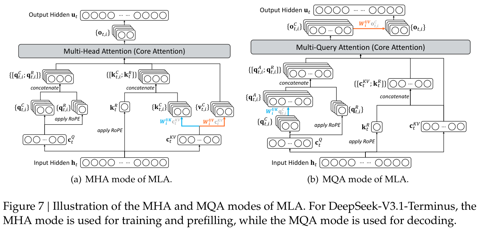
图 7｜MLA 的 MHA 与 MQA 模式示意图。对于 DeepSeek-V3.1-Terminus，训练和 prefill 使用 MHA 模式，decoding 使用 MQA 模式。
图 7 展示了 MLA 的两个方面——MHA 与 MQA 模式——以及它们之间的转换。
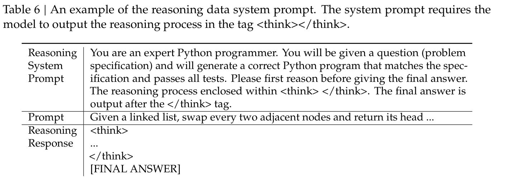
表 6｜推理数据系统提示示例。系统提示要求模型在 <think></think> 标签内输出推理过程。
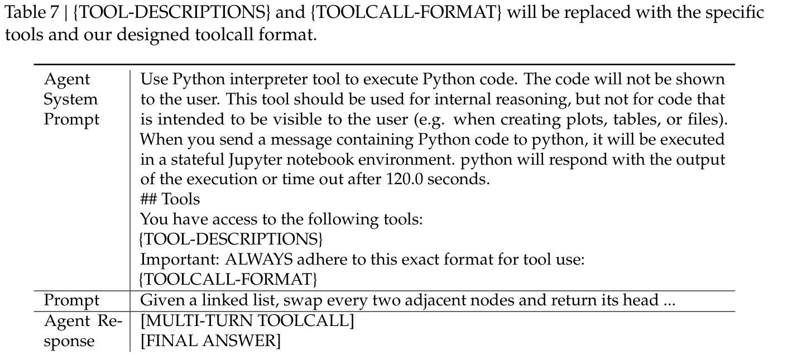
表 7｜{TOOL-DESCRIPTIONS} 和 {TOOLCALL-FORMAT} 将替换为具体工具以及我们设计的工具调用格式。
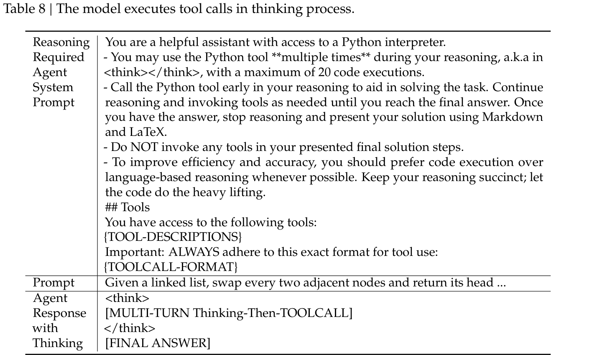
表 8｜模型在思考过程中执行工具调用。
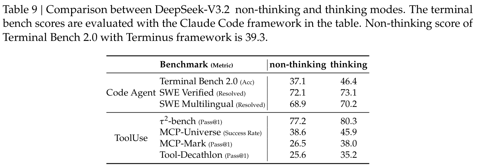
表 9｜DeepSeek-V3.2 非思考与思考模式的比较。表中的 Terminal Bench 分数使用 Claude Code 框架评估。采用 Terminus 框架时，Terminal Bench 2.0 的非思考模式分数为 39.3。
非思考模式的表现略逊于思考模式，但仍具有竞争力。
所有竞赛均将模型的最大生成长度设为 128k。不使用工具或互联网访问，测试严格遵守比赛的时间和尝试次数限制。
对于 IOI 评估，我们依据官方竞赛规则设计提交策略。规则允许每道题最多提交 50 次，并以所有子任务所取得的最高分为每次提交计分。具体而言，我们先为每道题采样 500 个候选解答，再应用多阶段筛选流水线。在初始阶段，我们剔除未能通过所提供样例测试或超出长度限制的无效提交。随后，我们使用 DeepSeek-V32-Exp 模型识别并移除模型明确表示无法或拒绝解题的样本。从剩余有效候选中，我们选出思考轨迹最长的 50 个样本进行最终提交。
对于 ICPC 评估，我们采用相同的筛选方法，但初始样本数更少。我们为每道题生成 32 个候选解答，并应用相同的筛选标准选择提交。
在 IMO 和 CMO 任务中，我们采用生成–验证–改进循环。模型迭代改进解答，直到获得满分自评，或达到最大修订次数上限，流程与 Shao et al. (2025) 相同。
研究与工程：Aixin Liu, Aoxue Mei, Bangcai Lin, Bing Xue, Bingxuan Wang, Bingzheng Xu, Bochao Wu, Bowei Zhang, Chaofan Lin, Chen Dong, Chengda Lu, Chenggang Zhao, Chengqi Deng, Chenhao Xu, Chong Ruan*, Damai Dai, Daya Guo, Dejian Yang, Deli Chen, Erhang Li, Fangqi Zhou*, Fangyun Lin, Fucong Dai, Guangbo Hao, Guanting Chen, Guowei Li, H. Zhang, Hanwei Xu, Hao Li, Haofen Liang, Haoran Wei, Haowei Zhang, Haowen Luo, Haozhe Ji, Honghui Ding, Hongxuan Tang, Huanqi Cao, Huazuo Gao, Hui Qu, Hui Zeng, Jialiang Huang, Jiashi Li, Jiaxin Xu, Jiewen Hu, Jingchang Chen, Jingting Xiang, Jingyang Yuan, Jingyuan Cheng, Jinhua Zhu, Jun Ran*, Junguang Jiang, Junjie Qiu, Junlong Li*, Junxiao Song, Kai Dong, Kaige Gao, Kang Guan, Kexin Huang*, Kexing Zhou, Kezhao Huang, Kuai Yu, Lean Wang, Lecong Zhang, Lei Wang, Liang Zhao, Liangsheng Yin*, Lihua Guo, Lingxiao Luo, Linwang Ma, Litong Wang, Liyue Zhang, M.S. Di, M.Y Xu, Mingchuan Zhang, Minghua Zhang, Minghui Tang, Mingxu Zhou, Panpan Huang, Peixin Cong, Peiyi Wang, Qiancheng Wang, Qihao Zhu, Qingyang Li, Qinyu Chen, Qiushi Du, Ruiling Xu, Ruiqi Ge, Ruisong Zhang, Ruizhe Pan, Runji Wang, Runqiu Yin, Runxin Xu, Ruomeng Shen, Ruoyu Zhang, S.H. Liu, Shanghao Lu, Shangyan Zhou, Shanhuang Chen, Shaofei Cai, Shaoyuan Chen, Shengding Hu, Shengyu Liu, Shiqiang Hu, Shirong Ma, Shiyu Wang, Shuiping Yu, Shunfeng Zhou, Shuting Pan, Songyang Zhou, Tao Ni, Tao Yun, Tian Pei, Tian Ye, Tianyuan Yue, Wangding Zeng, Wen Liu, Wenfeng Liang, Wenjie Pang, Wenjing Luo, Wenjun Gao, Wentao Zhang, Xi Gao, Xiangwen Wang, Xiao Bi, Xiaodong Liu, Xiaohan Wang, Xiaokang Chen, Xiaokang Zhang, Xiaotao Nie, Xin Cheng, Xin Liu, Xin Xie, Xingchao Liu, Xingkai Yu, Xingyou Li, Xinyu Yang, Xinyuan Li*, Xu Chen, Xuecheng Su, Xuehai Pan, Xuheng Lin, Xuwei Fu, Y.Q. Wang, Yang Zhang, Yanhong Xu, Yanru Ma, Yao Li, Yao Li, Yao Zhao, Yaofeng Sun, Yaohui Wang, Yi Qian, Yi Yu, Yichao Zhang, Yifan Ding, Yifan Shi, Yiliang Xiong, Ying He, Ying Zhou, Yinmin Zhong, Yishi Piao, Yisong Wang, Yixiao Chen, Yixuan Tan, Yixuan Wei, Yiyang Ma, Yiyuan Liu, Yonglun Yang, Yongqiang Guo, Yongtong Wu, Yu Wu, Yuan Cheng, Yuan Ou, Yuanfan Xu, Yuduan Wang, Yue Gong*, Yuhan Wu, Yuheng Zou, Yukun Li, Yunfan Xiong, Yuxiang Luo, Yuxiang You, Yuxuan Liu, Yuyang Zhou, Z.F. Wu, Z.Z. Ren, Zehua Zhao, Zehui Ren, Zhangli Sha, Zhe Fu, Zhean Xu, Zhenda Xie, Zhengyan Zhang, Zhewen Hao, Zhibin Gou, Zhicheng Ma, Zhigang Yan, Zhihong Shao, Zhixian Huang, Zhiyu Wu, Zhuoshu Li, Zhuping Zhang, Zian Xu, Zihao Wang, Zihui Gu, Zijia Zhu, Zilin Li, Zipeng Zhang, Ziwei Xie, Ziyi Gao, Zizheng Pan, Zongqing Yao
数据标注：Bei Feng, Hui Li, J.L. Cai, Jiaqi Ni, Lei Xu, Meng Li, Ning Tian, R.J. Chen, R.L. Jin, S.S. Li, Shuang Zhou, Tianyu Sun, X.Q. Li, Xiangyue Jin, Xiaojin Shen, Xiaosha Chen, Xinnan Song, Xinyi Zhou, Y.X. Zhu, Yanping Huang, Yaohui Li, Yi Zheng, Yuchen Zhu, Yunxian Ma, Zhen Huang, Zhipeng Xu, Zhongyu Zhang
商务与合规：Dongjie Ji, Jian Liang, Jianzhong Guo, Jin Chen, Leyi Xia, Miaojun Wang, Mingming Li, Peng Zhang, Ruyi Chen, Shangmian Sun, Shaoqing Wu, Shengfeng Ye, T.Wang, W.L. Xiao, Wei An, Xianzu Wang, Xiaowen Sun, Xiaoxiang Wang, Ying Tang, Yukun Zha, Zekai Zhang, Zhe Ju, Zhen Zhang, Zihua Qu
作者按名字的字母顺序排列。标有 * 的姓名表示已离开团队的人员。